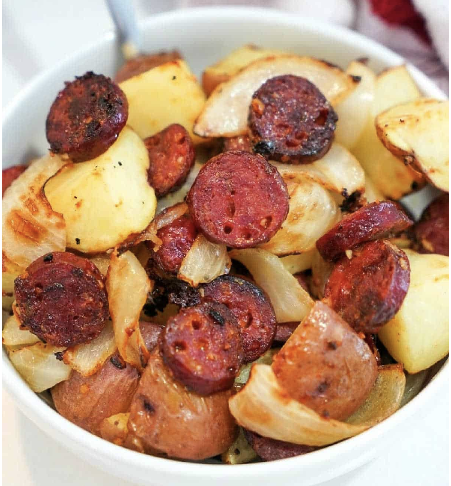

Shrimp Ingredients:
Fried Rice Instructions
- Preparation:In a nonstick round pan, combine carrot, white scallion parts, ginger, vegetable oil, and salt. In an air-fryer basket, place pan. Cook at 400°, stirring halfway through, until onion and carrot are just tender, about 5 minutes.
- Air Fryer: Remove air-fryer basket and add rice, garlic, soy sauce, sesame oil, and a few grinds of pepper to carrot mixture; stir to combine. Continue to cook at 400° until rice is lightly toasted, about 5 minutes more.
- Add the Eggs:Remove air-fryer basket and pour egg over half of rice mixture and peas over other half. Continue to cook at 400° until egg is just set and peas are warm, about 4 minutes more; stir to combine. Top with green scallion parts.
Fried Shrimp Instructions
- Preparation:In a large bowl, whisk garlic, oil, lemon juice, Italian seasoning, red pepper flakes, salt, and Worcestershire. Add shrimp and lemon slices and toss to coat.
- Air Fryer: Working in batches, in an air-fryer basket, arrange shrimp and lemon slices in a single layer (do not overcrowd). Cook at 400° until shrimp are opaque and cooked through, 4 to 6 minutes. Then remove and add to your fried rice.
Spinach, Pepper and Havarti Frittata

Ingredients
- 8 large eggs
- Kosher salt and freshly ground black pepper
- 2 cups loosely packed baby spinach leaves, roughly chopped
- 1 small red, yellow or orange bell pepper, finely chopped (about 3/4 cup)
- 2 scallions, finely chopped
- 2 tablespoons chopped fresh basil
- 2 tablespoons chopped fresh Italian parsley
- 1 cup grated Havarti (about 4 ounces)
- 1/4 cup grated Parmesan
- Preparation: Spray an 8-inch round nonstick cake pan with cooking spray. Whisk the eggs in a large bowl with 1 teaspoon salt and several grinds of pepper. Add the spinach, pepper, scallions, basil and parsley and stir to combine. Fold in the Havarti and Parmesan.
- Air Fry: Preheat a 3.5-quart air fryer to 310 degrees F. Pour the mixture into the prepared cake pan and place in the basket. Cook until the frittata is slightly puffed, deep golden and a tester inserted in the center comes out clean, about 25 minutes.
- Final Touches: Let the frittata cool in the pan for 10 minutes before unmolding. To unmold, invert onto a plate, then invert again, browned-side up, onto a serving plate.
- Pre cooked smoked sausages
- 1 Onion
- 2 Potatoes (red or russet)
- 1 tbsp. Olive oil
- 1 tbsp. Minced garlic
- 1/4 teaspoon Garlic salt
- 1/4 teaspoon Salt and pepper
- If desired: add chili powder or Sriracha powder for heat
- Getting Started:Slice all ingredients. Preheat your air fryer at 400 degrees for 5 minutes. Put cubed potatoes, sliced onions and sausage dials into a large bowl. Drizzle with olive oil and add garlic.
- Combine IngredientsSprinkle with seasonings and stir together so everything is coated nicely. Add half your contents into your basket so they do not overlap much.
- Air FryClose lid and air fry for 12 minutes total, tossing ingredients halfway through. Test potatoes with a fork to see if they are tender enough, if not add 2 minutes at a time up to an additional 5 minutes until everything is just as you like it.
Frittata Instructions
Sausage and Potatoes
Ingredients